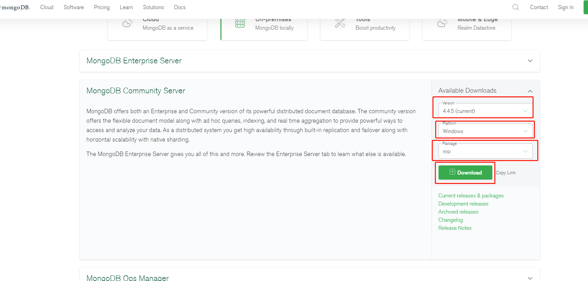

Mongodb集成使用文档
Mongodb集成使用文档
*Mongodb下载安装 *官网下载地址：https://www.mongodb.com/try/download/community version处选择版本，platform选择平台，package选择下载安装包或者zip解压包，点击download即可下载，如图所示 
*Mongodb，windows平台安装时可能遇到的环境问题 *安装时，可能提示2503、2502错误终止安装，这是因为C:\Windows\temp没有足够的权限，如下图所示位置：
 需要给temp文件夹权限，右键temp文件夹点击属性，点击安全选项卡，点击User，然后点击编辑，将完全控制、修改权限 打上勾，即可解决该报错。
需要给temp文件夹权限，右键temp文件夹点击属性，点击安全选项卡，点击User，然后点击编辑，将完全控制、修改权限 打上勾，即可解决该报错。 
*Mongodb安装步骤 *默认选项，全点击下一步即可完成安装。会自动启动服务，默认端口27017，默认密码无。
*Mongodb Compass *安装mongodb时选择compelte选项，会同时安装mongodb compass可视化工具，在MongoDB Compass连接数据库比较简单，可以选择默认的服务器、接口和None认证，然后点击CONNECT即可，如下图所示： 也可以选择安装navicat for mongodb数据可视化工具, 高版本的navicat Premium也支持连接mongodb（12版本及之后版本）

加入依赖
在pom.xml中加入如下依赖，如下图所示：
修改配置文件
在application.yml中加入数据库配置，如下图所示：
创建mongodb工厂配置
如下图所示：
根据配置文件，新创一个数据源类继承刚才的工厂 configurationProperties读取配置文件，即可开始使用，如下图所示：

业务代码中使用 如果多个数据源，需要用 @Qualifer指定数据源，如果不指定则默认刚设置的数据源，如下图所示：